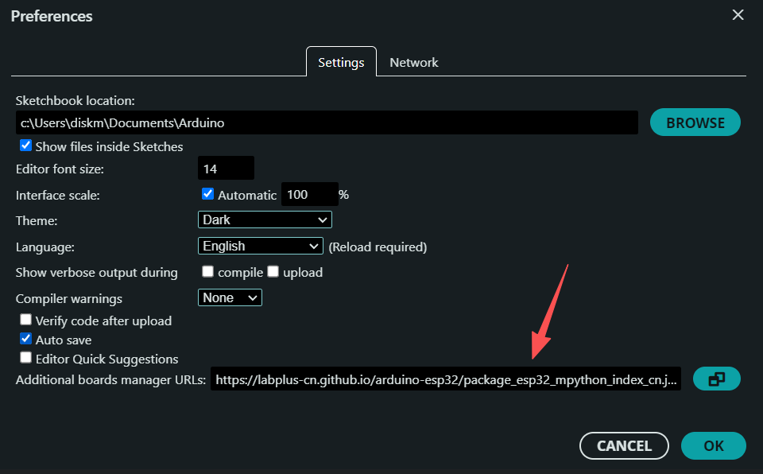

4.2.2.1 开发环境搭建
适配Windows、macOS、Linux三大系统，同时包含常见问题解决。
1. 下载安装包
官网下载（最稳定）：
访问 [Arduino官网下载页](https://www.arduino.cc/en/software)，根据你的系统选择对应版本：
Windows：推荐下载「Windows Installer」（安装版），也可选择「Windows ZIP」（免安装版）；
macOS：下载「macOS Intel」或「macOS Apple Silicon」（根据芯片选择）；
Linux：下载对应架构的压缩包（如64-bit x86）。
2. 系统分步安装
Windows系统 ……………………………………
双击下载的 .exe 安装包，若弹出「用户账户控制」提示，点击「是」；
选择安装语言（推荐English，后续可在IDE内改中文），点击「OK」；
点击「Next」，勾选「I accept the agreement」（同意协议），继续「Next」；
选择安装路径（默认即可，无需修改），继续「Next」；
勾选「Create Desktop Icon」（创建桌面快捷方式），点击「Install」开始安装；
安装完成后，点击「Finish」，若提示「Install USB driver」（安装USB驱动），务必点击安装（驱动是连接硬件的关键）。
macOS系统 ………………………………………
双击下载的 .dmg 镜像文件，弹出安装窗口；
将「Arduino IDE」图标拖入「Applications」文件夹；
首次打开时，若提示「无法验证开发者」，右键点击Applications里的Arduino IDE，选择「打开」，再次点击「打开」即可（macOS安全机制）；
若芯片为Apple Silicon（M1/M2/M3），需确保下载的是对应版本，避免兼容性问题。
Linux系统 ………………………………………
解压下载的 .tar.xz 压缩包（如 tar -xvf arduino-ide_2.x.x_Linux_64bit.tar.xz）；
进入解压后的文件夹，运行安装脚本：`./install.sh`（需sudo权限，输入密码）；
安装完成后，可通过终端输入 arduino-ide 启动，或在应用列表找到图标。
3. 添加掌控板支持
打开Arduino IDE，点击「File」→「Preferences」；
{kind=link}

如上图，填入掌控板开发支持URL：https://labplus-cn.github.io/arduino-esp32/package_esp32_mpython_index_cn.json
点击「OK」保存。
进入「Tools」→「Board」→「Boards Manager」；
输入mpython搜索，找到mPython掌控板支持包，点击「Install」安装，等待安装完成即可。